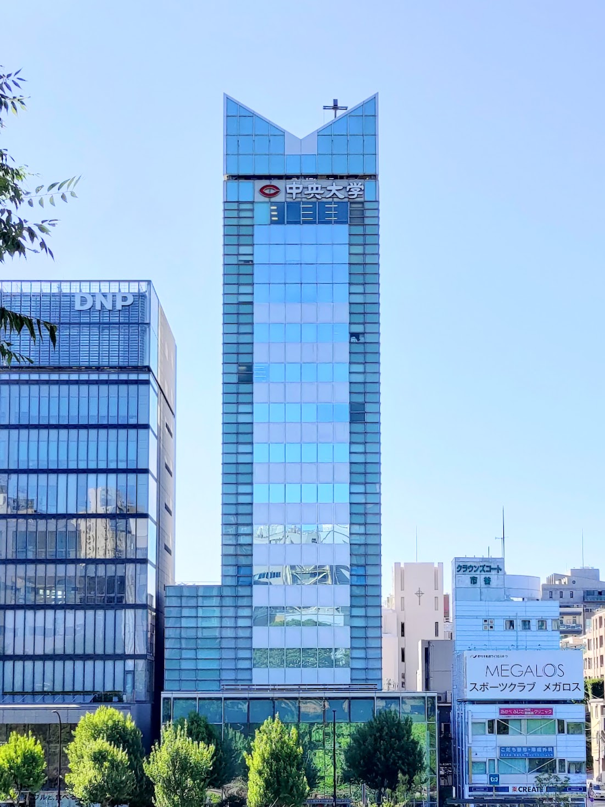

11月4日,11月5日の2日間に渡り、中央大学市ヶ谷田町キャンパスで開催!!!
iTLFest.とは
| 名称 | iTLFest. |
| 開催日 | 11月4日(土),11月5日(日) |
| 開催時間 | 10:00 ~ 17:00 |
来場者特典もございます!
ぜひお越しください！！！！
学部説明

中央大学国際情報学部（愛称：iTL）は、
急速に情報化するこの世界で活躍するための人材を育てる学部です。
この学部では、その名が示す情報の知識だけでなく、
中央大学の伝統である法律の知識も学びます。
その学びは各分野に特化しているだけでなく、分野横断的でもあり、
多彩なキャリアを持っている先生方が教鞭を執っています。
都心にキャンパスがあるこの学部では日本各地、
さらには海外からも学生が集まってきており、
それぞれが勉学だけでなく、自身の得意分野で力を発揮しながら、
前向きに学生生活を送っています。
また、この学部は創立5年目の若い学部であるため、
学生が中心となって何もないところから独自の雰囲気を作り上げており、
学祭（通称 iTLFest.）では特にその魅力を
強く感じていただけることと思います。